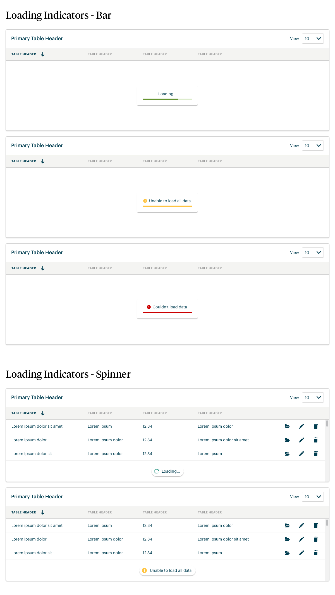
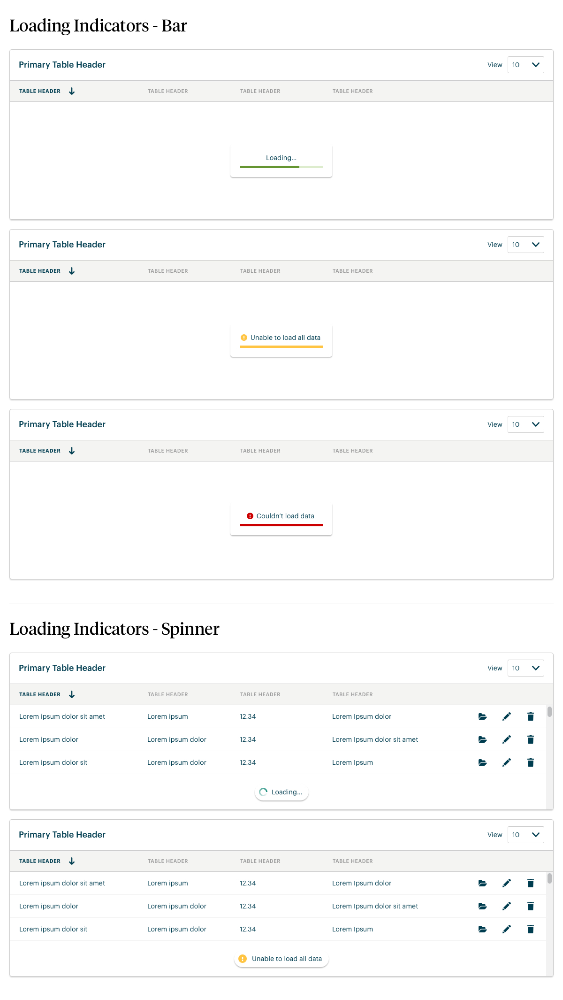

Finally, my chance to put these design skills to use for the good guys (read: NPOs working in human services)! Also, the time Steve Ballmer disliked my font choice (though it all worked out... once I changed the font).
Jun 2018 - Present
Landing screen I designed for one of our Case Management products allowing users to quickly view pertinent tasks and information.

Example of a screen I redesigned that allows users of our case management products to view and track different types of information about their program participants (e.g. program progress, school performance, and attendance).
The images below scroll up/down. Click the images below to enlarge.
Dashboards I designed for one of our Case Management products allowing users to view reporting data on program attendance and dig into demographic census data of the communities that their organization serves.


Screens that I designed for our participant portal that allowed program participants to log in and view the steps within thier assigned service plans. It also allowed them to fill out and submit required forms.
The images below scroll up/down. Click the images below to enlarge.
A calendar view that I designed for our case management products allowing case workers to view and create appointments with their program participants as well as see the schedules of their colleagues.


Screens that I designed for our case management products allowing frontline workers to distrbute inventory (e.g. beds, food, medical equipment) to program participants as well as allowing administrators to create/edit items and item categories.
The images below scroll up/down. Click the images below to enlarge.
Screens that I designed allowing case workers to track and send referrals for their program participants made through our network of organizations.


UI Kit that I created for our design system providing a consistent UI experience within our Case Management software products.
Click the images below to enlarge.


 



A document that I created assessing the brand colors used within our UI and how they stack up against WCAG AA and AAA accessibility standards. I also provided recommendations for changes where current branding failed to meet standards.
The images below scroll up/down. Click the images below to enlarge.